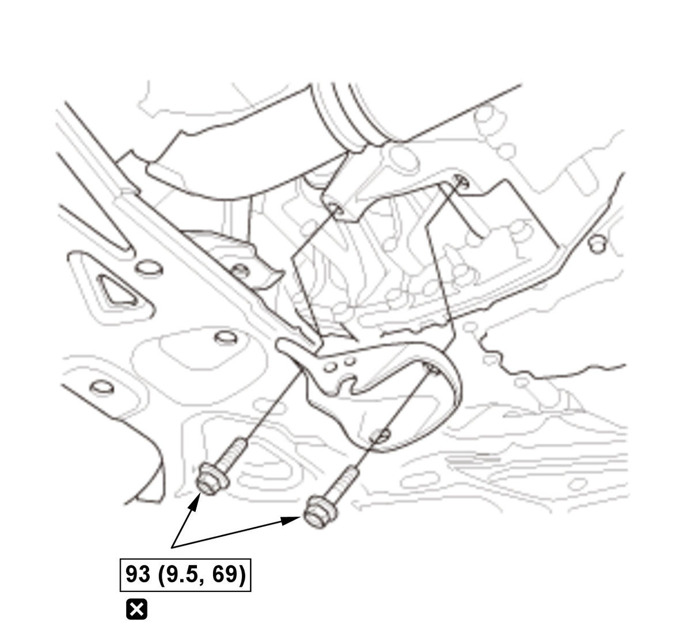

Removal and Installation
NOTE: How to read the torque specifications.
- Engine Undercover - Remove
- Engine - Support
1. Support the engine with a transmission jack and a wood block under the oil pan. - Torque Rod - Remove
- Torque Rod Bracket - Remove

Courtesy of HONDA, U.S.A., INC.NOTE: If necessary, remove the torque rod bracket.
- All Removed Parts - Install
1. Install the parts in the reverse order of removal.
NOTE:- Make sure to install the torque rod with the "UP" mark (A) facing up.
- Do the mounts tightening procedure before tightening all of the mounts' bolts and nuts.